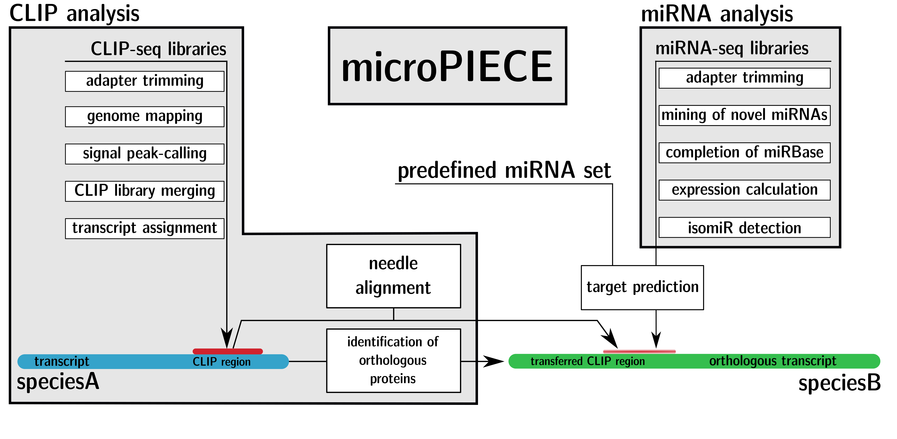

microPIECE - microRNA pipeline enhanced by CLIP experiments
Repository link »
PDF link »
View review issue »

Published: 10 April 2018
Amsel et al., (2018). microPIECE - microRNA pipeline enhanced by CLIP experiments. Journal of Open Source Software, 3(24), 616. https://doi.org/10.21105/joss.00616
Summary
All microRNAs are assumed to be post-transcriptional fine-regulators. With a length of around 21 nucleotides, they form a RNA-induced silencing complex (RISC) complex with a protein of the Argonaute family. This complex then binds to the messengerRNA untranslated regions and coding sequence regions and in general promotes degradation or translational inhibition. It is now important to know the microRNA-mRNA pairs in order to infer dysregulating effects on the organism. In order to assign a microRNA to a mRNA target, various tools with different technical approaches were developed. They are mostly based on the assumption that the first eight nucleotides of the microRNA (seed region) determine the binding region on the mRNA. Some approaches also include supporting bindings in the rear part of the microRNA, others take secondary structures of the mRNA or binding energies of the mRNA-miRNA complex into account. Nevertheless, they all suffer from the statistical problem that such short target regions, often occur simply by chance in transcript sequences. This results in a huge amount of false positive predictions. A target prediction of all 430 Tribolium castaneum mature microRNAs from miRBase.org against all 18.534 protein coding cDNA sequences from Ensembl.org results in 2.203.593 possible microRNA-target interactions, predicted by the commonly used tool miranda (Betel et al. 2008) with standard parameters. To increase the credibility, wet lab validation methods like luciferase reporter assays are required. The disadvantage here is that this workflow is not applicable for high-throughput analysis, as it can only treat small subsets of sequence combinations. Another, more scalable method is cross-linking immunoprecipitation-high-throughput sequencing (CLIP-seq). Here, binding regions of the RISC show a specific signal in the sequencing reads that can be used to shrink the search space of miRNA target predictions, when mapping them to the transcriptome. The limitation here is the difficult technical treatment in the laboratory. This is the reason why there are only a few datasets available for human, mouse, worm and mosquito. It would now be useful, if we could simply transfer the information of a binding region, already identified by CLIP-seq, to another species. This is what our microRNA pipeline enhanced by CLIP experiments microPIECE is about.
The pipeline (Figure 1) takes the AGO-CLIP data from a speciesA and transfers it to a speciesB. Given a set of miRNAs from speciesB it then predicts their targets on the transferred CLIP regions.
For the minimal workflow it needs a genome file, as well as its annotation file in GFF format for speciesA and speciesB. For speciesA at least one AGO-CLIP dataset is needed and speciesB needs a set of miRNAs for the target prediction. For the full workflow, a set of smallRNA-sequencing data is additionally needed and a set of non-coding RNAs can be provided as filter. The pipeline uses the smallRNA data for the mining of novel microRNAs and the completion of the given miRNA dataset, if needed. It further performs expression calculation, isoform detection, genomic loci identification and orthology determination.  In case of a provided smallRNA dataset, the pipeline starts with the miRNA analysis. It uses Cutadapt (Martin 2011) to trim the adapter sequences from the small RNA sequencing libraries from speciesB. If provided, the trimmed libraries are filtered for ncRNAs using bwa (H. Li and Durbin 2009).The resulting files are merged into a pooled set and used for mining of novel microRNAs with miRDeep2 (Friedländer et al. 2011). The pipeline then parses the result file and tries to add missing entries from the miRBase.org database (Kozomara and Griffiths-Jones 2013), e.g. if only one arm was previously annotated and the mining discovers the exact position of the particular arm. The novel miRNAs and completed entries are merged to the existing miRNA set and used as reference for the following analysis. The expression of each miRNA is calculated in RPM, outgoing from the non-pooled trimmed and filtered libraries. The pipeline also accounts for miRNA isoforms, by removing all trimmed reads, containing undetermined nucleotides. Orthologous miRNAs in other species were determined by a BLASTN (Altschul et al. 1990) search against all metazoan miRNAs from miRBase.org. Finally, the genomic regions for the miRNAs were also identified by a BLASTN search against the genome of speciesB.
If no smallRNA dataset is provided, the pipeline directly jumps to the CLIP analysis. There it starts with the speciesA CLIP-seq library trimming, using Cutadapt (Martin 2011). Trimmed reads are then mapped to the genome with gsnap (Wu and Nacu 2010) and the results are evaluated by Piranha (Uren et al. 2012). Then the libraries are merged into the BED file format. We further used SAMtools (H. Li et al. 2009) and BEDtools (Quinlan and Hall 2010) for file conversions during the pipeline. The BED file includes a column that displays how many libraries support each genomic position. Next, a file for each library-support-level is created, so that the user can in the end decide how many CLIP libraries are necessary to account this region as binding region. Now for each library-support-level, an assignment of each sequence to the transcriptome is performed. Outgoing from the transcript, the corresponding protein is used to discover the orthologous protein in the speciesB by Proteinortho (Lechner et al. 2011). This information is used as criteria to align the CLIP region from speciesA to the orthologous transcript in speciesB with EMBOSS Needle (Rice, Longden, and Bleasby 2000).
The pipeline analizes the miRNA set (either from the full or minimal workflow) for miRNA isoforms. Based on previous benchmarks (Amsel, Vilcinskas, and Billion 2017), we chose miraligner from the seqbuster package (Pantano, Estivill, and Martí 2009) as miRNA isoform detection tool. Finally, a target prediction with miranda (Betel et al. 2008) on the previously transferred orthologous CLIP regions is performed.
Depending on the provided data, the minimal output of the pipeline consists of a target prediction output from miranda for each library-support-level, based on the transferred CLIP regions. In case the pipeline additionally received smallRNA data, a microRNA set with known and novel miRNAs together with an expression file is saved, as well as the orthologs to other species, the genomic loci of the miRNAs and the identified isoforms.
As an example case, we used microPIECE on the AGO-CLIP data from Aedes aegypti (Zhang et al. 2017) and the 430 Tribolium castaneum miRNAs from miRBase.org. The target prediction resulted in 3010 miRNA-target interactions with a three of six library-support-level. Outgoing from the previously reported 2.203.593 possible microRNA-target interactions, we reduced the results to a very conservative set.
References
Altschul, Stephen F, Warren Gish, Webb Miller, Eugene W Myers, and David J Lipman. 1990. “Basic Local Alignment Search Tool.” Journal of Molecular Biology 215 (3). Elsevier:403–10. https://doi.org/10.1016/S0022-2836(05)80360-2.
Amsel, Daniel, Andreas Vilcinskas, and André Billion. 2017. “Evaluation of High-Throughput isomiR Identification Tools: Illuminating the Early isomiRome of Tribolium Castaneum.” BMC Bioinformatics 18 (1). BioMed Central:359. https://doi.org/10.1186/s12859-017-1772-z.
Betel, Doron, Manda Wilson, Aaron Gabow, Debora S Marks, and Chris Sander. 2008. “The microRNA. Org Resource: Targets and Expression.” Nucleic Acids Research 36 (suppl_1). Oxford University Press:D149–D153. https://doi.org/10.1093/nar/gkm995.
Friedländer, Marc R, Sebastian D Mackowiak, Na Li, Wei Chen, and Nikolaus Rajewsky. 2011. “MiRDeep2 Accurately Identifies Known and Hundreds of Novel microRNA Genes in Seven Animal Clades.” Nucleic Acids Research 40 (1). Oxford University Press:37–52. https://doi.org/10.1093/nar/gkr688.
Kozomara, Ana, and Sam Griffiths-Jones. 2013. “MiRBase: Annotating High Confidence microRNAs Using Deep Sequencing Data.” Nucleic Acids Research 42 (D1). Oxford University Press:D68–D73. https://doi.org/10.1093/nar/gkt1181.
Lechner, Marcus, Sven Findeiß, Lydia Steiner, Manja Marz, Peter F Stadler, and Sonja J Prohaska. 2011. “Proteinortho: Detection of (Co-) Orthologs in Large-Scale Analysis.” BMC Bioinformatics 12 (1). BioMed Central:124. https://doi.org/10.1186/1471-2105-12-124.
Li, Heng, and Richard Durbin. 2009. “Fast and Accurate Short Read Alignment with Burrows–Wheeler Transform.” Bioinformatics 25 (14). Oxford University Press:1754–60.
Li, Heng, Bob Handsaker, Alec Wysoker, Tim Fennell, Jue Ruan, Nils Homer, Gabor Marth, Goncalo Abecasis, and Richard Durbin. 2009. “The Sequence Alignment/Map Format and Samtools.” Bioinformatics 25 (16). Oxford University Press:2078–9. https://doi.org/10.1093/bioinformatics/btp352.
Martin, Marcel. 2011. “Cutadapt Removes Adapter Sequences from High-Throughput Sequencing Reads.” EMBnet. Journal 17 (1):pp–10. https://doi.org/10.14806/ej.17.1.200.
Pantano, Lorena, Xavier Estivill, and Eulàlia Martí. 2009. “SeqBuster, a Bioinformatic Tool for the Processing and Analysis of Small Rnas Datasets, Reveals Ubiquitous miRNA Modifications in Human Embryonic Cells.” Nucleic Acids Research 38 (5). Oxford University Press:e34–e34. https://doi.org/10.1093/nar/gkp1127.
Quinlan, Aaron R, and Ira M Hall. 2010. “BEDTools: A Flexible Suite of Utilities for Comparing Genomic Features.” Bioinformatics 26 (6). Oxford University Press:841–42. https://doi.org/10.1093/bioinformatics/btq033.
Rice, Peter, Ian Longden, and Alan Bleasby. 2000. “EMBOSS: The European Molecular Biology Open Software Suite.” Elsevier Current Trends. https://doi.org/10.1016/S0168-9525(00)02024-2.
Uren, Philip J, Emad Bahrami-Samani, Suzanne C Burns, Mei Qiao, Fedor V Karginov, Emily Hodges, Gregory J Hannon, Jeremy R Sanford, Luiz OF Penalva, and Andrew D Smith. 2012. “Site Identification in High-Throughput Rna–Protein Interaction Data.” Bioinformatics 28 (23). Oxford University Press:3013–20. https://doi.org/10.1093/bioinformatics/bts569.
Wu, Thomas D, and Serban Nacu. 2010. “Fast and Snp-Tolerant Detection of Complex Variants and Splicing in Short Reads.” Bioinformatics 26 (7). Oxford University Press:873–81. https://doi.org/10.1093/bioinformatics/btq057.
Zhang, Xiufeng, Emre Aksoy, Thomas Girke, Alexander S Raikhel, and Fedor V Karginov. 2017. “Transcriptome-Wide microRNA and Target Dynamics in the Fat Body During the Gonadotrophic Cycle of Aedes Aegypti.” Proceedings of the National Academy of Sciences 114 (10). National Acad Sciences:E1895–E1903. https://doi.org/10.1073/pnas.1701474114.